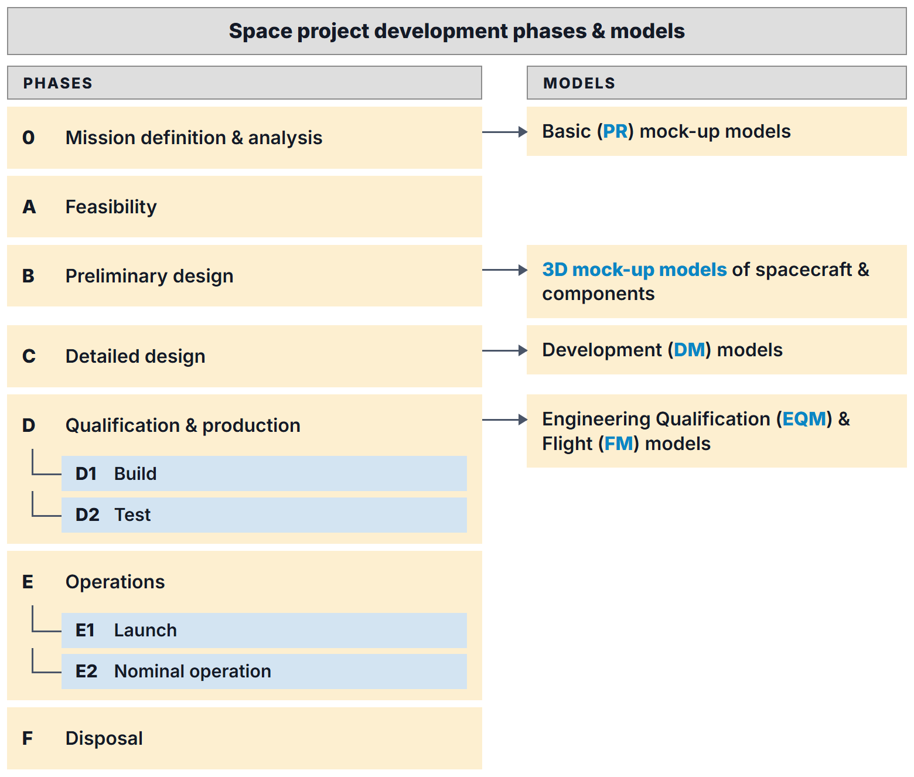
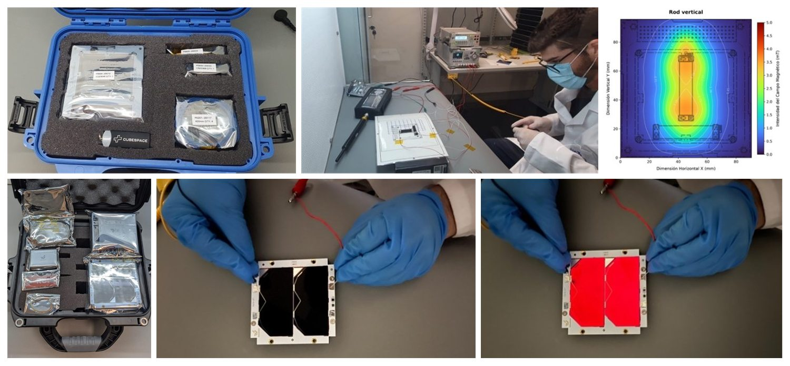
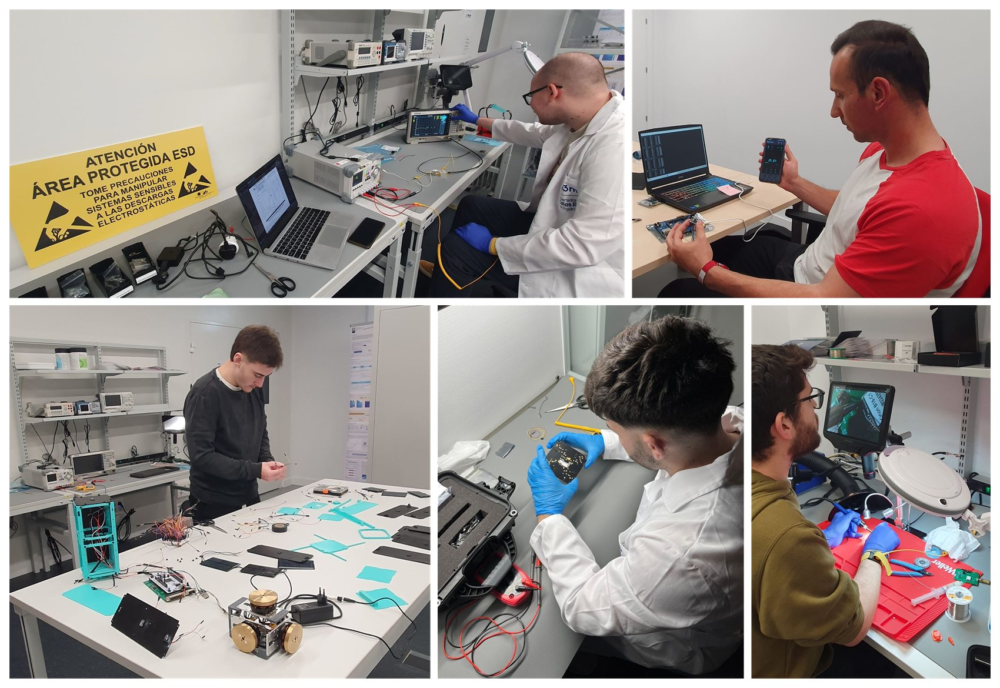
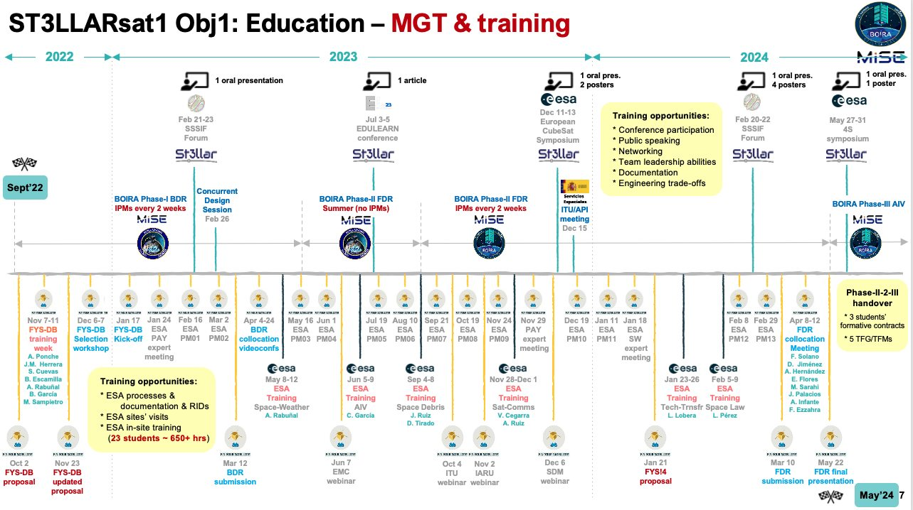
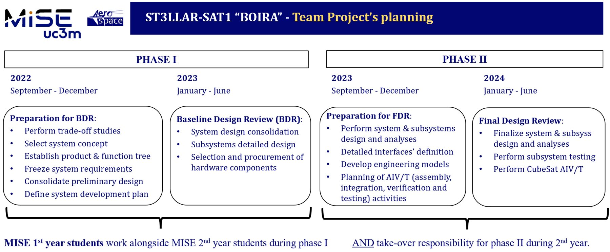
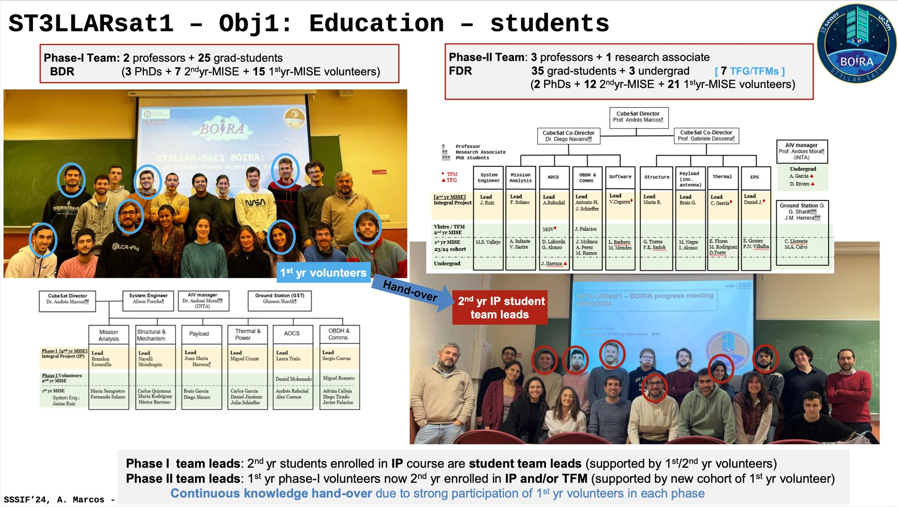
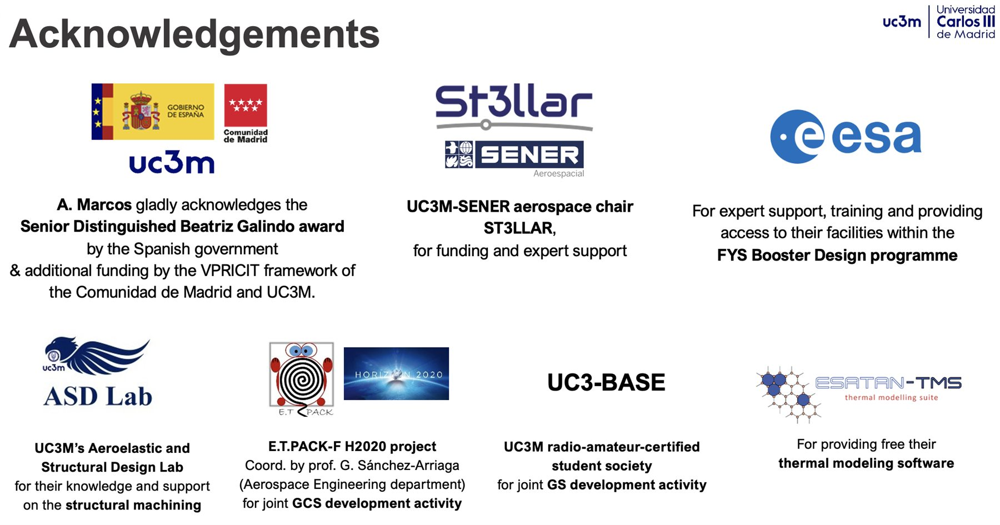

Program
Phases, ESA Fly Your Satellite! Design Booster, knowledge hand-over and funding
Project phases & current status
ST3LLARsat1 has been organized in phases covering academic years (from September to June) and roughly aligned with those used for a space project, see Figure 20. Note that most space projects (from nano/cube-sats in universities to micro/large scientific/commercial satellites) follow the listed 7 phases: from definition (phase 0) to disposal (phase F). Note also that each phase has an associated type of model: from mock-up (generally 3D printed models to check assembly, dimensions…) through development models (DM) such as structural and thermal (STM) and up to engineering qualification models (EQM) and proto-flight / flight-models (PFM/FM).
In general, for a first nano/cube-satellite project at a university, the average development time is 5-7 years from definition (phase 0) to launch and operation (phase E).

The phases of ST3LLARsat1 have been adapted due to the fact that it has a main educational objective (and therefore of high turnover of the student team involved, and very fixed calendars in terms of their availability) and to the fact that having participated in the ESA FYS!-DB program brought around its own time-line.
As of October 2026, we have had 4 phases:
-
Sept ’22 – Jun ’23
Phase 1: Feasibility & ESA FYS!-DB program Baseline Design Review (BDR)
-
Sept ’23 – Jun ’24
Phase 2: ESA FYS!-DB program Final Design Review (FDR)
-
Sept ’24 – Jun ’25
Phase 3-A: Design consolidation
-
Jun ’25 – Jun ’26
Phase 3-B: Preliminary AIVT activities
-
Sept ’26 – Jun ’27
Phase 4: Consolidation of AIVT’s activitiesCurrent
With respect to the phases shown in Figure 20, during phases 1, 2 & 3-A the design of the mission and Nanosatellite were performed, while our phase 3-B would correspond to phase C in Figure 20 (i.e. detailed design) and our phase 4 to phase D1 (build and (preliminary) test).
Current status
As shown before, currently, we have started phase 4, which is the consolidation of AIVT activities (see the two figures below showing examples of students’ AIVT activities and results). Within this phase, we are going to develop the set of test models (from STM to PFM) and start the environmental qualification tests. The AIVT phase is undertaken along the consolidation of the OBSW/OBDH and the finalization of the ground segment (we already have an active tracking & downlink chain between our UHF/VHF antenna and our CubeSat Operation Center, CSOC).


The beginning: ESA FYS! Design Booster pilot program & knowledge hand-over
Although officially, the ST3LLARsat program started in September 2022, earlier that year the space mission challenge for the mandatory (team-design) MISE “Space Pre-Design, MISE-SPD” course was set for the student teams to propose a 1U nanosatellite with a scientific and/or technological mission of their choice. The idea of the ST3LLARsat director, and MISE-SPD coordinator, was to use the resulting feasibility studies as the inception of the 1st mission of the program.
As is detailed in the last section of the ST3LLARsat program page, the start of the CubeSat activities in the MISE (geared towards the start of the program and a 1st mission) was timed to align with ESA FYS! call of its pilot program “Design Booster (DB)”, which initially was announced to open in Spring 2022. The aim of ESA-FYS! DB was to help European student teams reach a Final Design Review stage as soon as possible and with the guarantees provided by the support of ESA experts. The program was to last for 1.5 years and would entail continuous oversight by ESA FYS! personnel and a rigorous adherence to ESA and CubeSat regulations.
The ESA-FYS! DB call opened in September 2022 as a two-stage proposal. By the end of that October, European teams had to send a detailed proposal of their mission concept and status and, if pre-selected, several members would be invited to attend a one-week training workshop at ESA-ESTEC in November and would then have another month to improve the proposal. Our ST3LLARsat1 “Boira” proposal was written and consolidated during the optional 12 ECTS MISE “Integral Project (MISE-IP)” course, which ran from September to December, and was intentionally created to support the development of the CubeSat activities. The MISE-IP was attended by most of the original team from the MISE-SPD class that proposed the “Boira” concept. The dimension of the nanosat was changed to 2U for the reasons described in the design summary, but otherwise the scientific aim and mission concept remained the same.
It was with immense pride for the work of our students that we learnt in December 2022 that UC3M ST3LLARsat1 had been selected (along with 4 other teams out of 12 candidates –some from universities that had already launched a nanosat or had a program for over 10 years). Further, ours was the 1st nano/cube-sat in the Community of Madrid chosen by ESA for its FYS! program.
The pilot ESA-FYS! DB program started in January 2023 and lasted until June 2024, and as is typical for ESA projects, it required very intense documentation and evaluation of progress and requirements (typically having videoconferences with ESA every 2 weeks, and almost monthly documents delivery and/or presentations –see also the last section of the ST3LLARsat program page). Figure 23 shows the timeline of the full program as experienced by ST3LLARsat1 team.
Participation in ESA FYS!-DB was a great motivator and allowed us to advance the design of ST3LLARsat1 faster, with more confidence, and a greater understanding of the problems and decisions than would have been possible on our own (especially noting it was our first ‘rodeo’). Although challenging, the ESA program offered support and also offered our students the possibility to interact directly with ESA experts, learn about European space standards and processes, and even travel to ESA facilities for training. Indeed, before the ST3LLARsat program was initiated, there have been only a couple of students accepted to ESA training workshops (another ESA Academy program to prepare European students for the space domain by funding their attendance to workshops lasting from 1 to 5 days at their facilities). After our participation in the ESA-FYS! DB program, and motivated by ST3LLARsat1 needs and progress, since September 2022 and until now (October 2026), more than 38 of our students have been selected for these ESA training opportunities –which represent over 1,100 hours of training given by ESA experts to our students (see also the metrics of the overview page).

Knowledge hand-over between student cohorts
An important consideration in university CubeSat programs is the hand-over of experience and knowledge across the student cohorts, since every few (in the MISE case, two) years there is a complete renewal of most of the student team. A strategy was devised during the October proposal to the ESA-FYS! DB call, see Figure 24, based on the sequential timing of the MISE-IP (Sept-Dec) and MISE-SPD (Jan-Jun) courses. Recall that the MISE-IP course is a 2nd year optional class, while the MISE-SPD a mandatory 1st year class. Thus, it was thought ideal to have the 2nd year students in the MISE-IP take over the role of subsystem team-leads of a team of 1st year volunteers that would then (together with the rest of the 1st year cohort) work on the MISE-SPD course and, critically, hopefully many of these volunteers would register for the 2nd year MISE-IP when their time came (and then be supported by the new batch of volunteers from the new 1st year cohort).

For ST3LLARsat1 Phase I (Sept’22-Jun’23), 7 second-year MISE students (5 enrolled in MISE-IP) took the lead and performed the bulk of the work for BDR phase of ESA-FYS! DB. They were supported by 15 first-year MISE volunteers from the 2022/24 cohort that started that September (see left-side of Figure 25 below). As aforementioned, the expectation was that part of these 15 first-year MISE volunteers would take over during Phase II (Sept’23-Jun’24) –coinciding with the ESA-FYS! DB’s FDR phase, by registering to the 2023-24 MISE-IP course, and in turn be supported by first-year MISE volunteers from the new 2023/25 cohort. And then the cycle would repeat. This worked well with 12 second-year MISE students (10 registered to MISE-IP) and 21 first-year MISE volunteers, see right-side of Figure 25, and has worked similarly well after that (see Figure 2).
In addition, students are encouraged to perform their master theses in topics related to ST3LLARsat1. For the first year, it was too late to have any TFMs since students typically choose their topics during the end of the previous year, but for phase-2 four MISE students did their TFM and three undergraduate students (TFGs). As of November 2026, see section on Dissemination, Theses & Reports, 20 theses have been defended during the first 4 years of the ST3LLARsat program.

Funding acknowledgement
Here, we acknowledge and thank all the funding obtained to make ST3LLARsat1 a reality. This covers from funding specifically used to procure components, projects that allowed the program/mission director to devote time to this activity and/or hire supporting staff members, and people/teams/organizations that provided expertise and support (see also Figure 26):
The names of the program and first mission come from ST3LLAR, an academic-industrial aerospace chair established in March 2018 between UC3M and SENER (one of the leading space technological companies in Spain). SENER provided between 15–30 K€ per year, from the time the ST3LLARsat program started (Sept’22) and until end of the chair (March’24). This funding was used to procure most of ST3LLARsat1’s components and provide student “Young Investigator” awards to selected students to perform their thesis on a ST3LLARsat1 subsystem.
Prof. Marcos received in 2021 a personal five-year 450 K€ “Beatriz Galindo Senior Distinguished Investigator” award by the Spanish Government that enabled him to devote up to 30% of his time to ST3LLARsat1 until June’26. In addition, he also received that year another award of 190 K€ (this time by the Comunidad de Madrid, CAM) to form his research team. Both these awards allowed prof. Marcos to start ST3LLARsat1 and hire a senior postdoctoral researcher and master students to support the critical, work-intensive early phases, as well as complement ST3LLAR’s funding into 2026.
The Department of Aerospace Engineering (DAE) at UC3M received in January 2026 the prestigious Spanish government “María de Maeztu (MdM)” Seal of Excellence. This award comes with 2.5 M€ of funding plus additional funding for 7 PhD students and a 4-year lab technician contract. UC3M has rewarded this achievement by adding additional funding to the MdM funding, and as an indication part of the funding has been assigned to CSAT/ST3LLARsat to complete the CSAT by procuring a TVAC with at least 600×600 mm internal space, which will allow us to environmentally test CubeSats up to 27U, and thus be able to perform the environmental qualification tests for ST3LLARsat1.
In addition, during the course of the program/mission, several other agreements were established with other UC3M professors and organizations. Most of these did not result in funding for ST3LLARsat1, but contributed with time, expertise, and/or components:
- ESA Academy, for their support during ESA-FYS! Design Booster program –special thanks to: Dr. Loris Franchi and Mr. David Palma.
- E.T.PACK-Fly, an EIC Transition Project funded in September 2022 with 2.5 M€ to prepare a Ready-to-Fly (TRL 8) deorbit device based on Electro-Dynamic Tether (EDT) technology. It was coordinated by prof. Gonzalo Sánchez-Arriaga from DAE, and they purchased and made available specific hardware components for the ground station.
- UC3-BASE, a UC3M Telecommunications’ student association that is supporting ST3LLARsat with the ground segment/CSOC definition and installation.
- ESATAN-TMS, for providing their thermal modeling software.
- ASD Lab, the aeroelastic and structural design lab at the department, for their support on structural machining for the in-house antenna.
